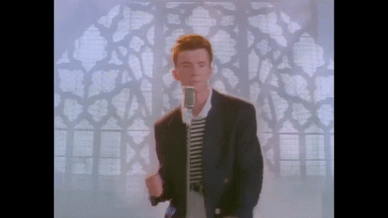

SECURITY AWARENESS TRAINING
DU BLEV FANGET!
Du er blevet RICKROLLED af IT! 😂

Du klikkede på et mistænkeligt link. Men kunne du have opdaget faresignalerne inden du klikkede?
🔍 Find de 6 faresignaler ↓PHISHING DETECTION
🔎 Hvad skulle du have opdaget?
Der var seks bevidste faresignaler i mailen. Klik på hvert punkt for at se fejlen, og hvad du skulle have undersøgt.
🛡️ Sådan beskytter du dig næste gang
✅ Kontrollér hele afsenderens mailadresse.
✅ Hold musen over links, før du klikker.
✅ Vær skeptisk over for uventede dokumenter.
✅ Lad dig ikke presse af korte tidsfrister.
✅ Bekræft mistænkelige anmodninger
via en kendt kontaktvej.
✅ Rapportér mistænkelige mails til IT.
🎓 Husk det vigtigste!
Selv en mail fra en person, du kender, kan være falsk.
Et enkelt ekstra tjek kan gøre en stor forskel.